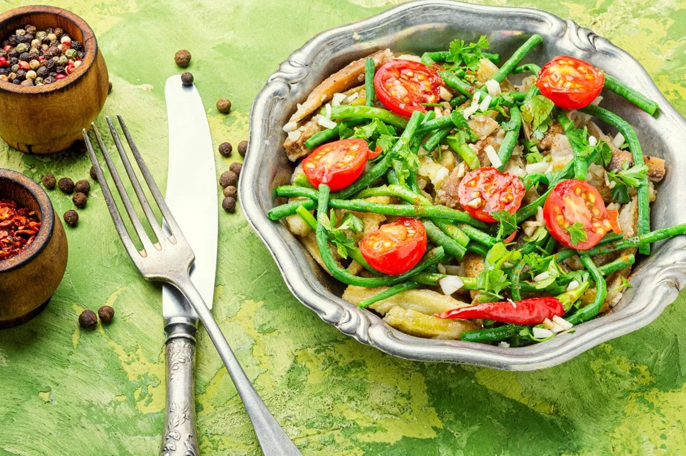
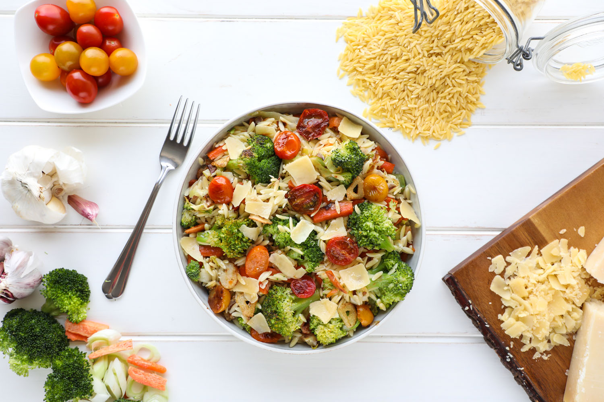
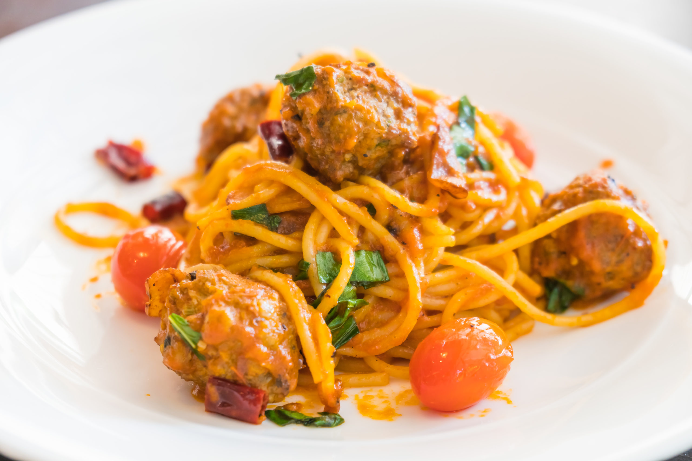

Recetas Sostenibles: Cocina del Huerto a la Mesa
Ensalada Fresca de Temporada

Esta ensalada fresca y vibrante es un deleite para los sentidos. Llena de colores y sabores de la temporada,
combina una variedad de ingredientes nutritivos para crear una opción saludable y deliciosa. Las verduras de
hojas verdes crujientes se complementan con la dulzura de las frutas frescas, mientras que los frutos secos y
las semillas añaden textura y sabor. Esta ensalada es un recordatorio de la belleza y diversidad de los
productos locales y de temporada.
Ingredientes:
Mezcla de lechugas frescas,
Espárragos tiernos,
Fresas maduras,
Queso de cabra o queso feta desmenuzado,
Nueces tostadas,
Semillas de girasol,
Vinagreta de limón y miel.
Esta ensalada no solo es un festín para el paladar, sino que también promueve la sostenibilidad al utilizar
ingredientes frescos y de temporada. ¡Disfruta de esta opción nutritiva y colorida que celebra la conexión
entre el huerto y la mesa.
Risotto de Vegetales de Huerto

Este risotto de vegetales de huerto es un plato reconfortante que combina la riqueza y la cremosidad del arroz
con la frescura y la vitalidad de los vegetales de temporada. Cada bocado es una explosión de sabores y
texturas, y lo mejor de todo es que puedes adaptar los ingredientes según lo que esté disponible en tu propio
huerto o mercado local. Este platillo refleja la belleza de la cocina sostenible y resalta la importancia de
utilizar ingredientes frescos y locales.
Ingredientes:
Arroz Arborio,
Caldo de vegetales casero,
Cebolla picada,
Zanahorias en cubos,
Guisantes frescos,
Espárragos tiernos,
Calabacín en dados,
Queso parmesano rallado,
Aceite de oliva virgen extra,
Sal y pimienta al gusto y
Albahaca fresca picada (opcional, para decorar).
Este risotto es una oda a la frescura y a la conexión entre el huerto y la mesa. Al utilizar ingredientes
cultivados localmente y de manera sostenible, estás creando un platillo que no solo deleita a tus papilas
gustativas, sino que también promueve prácticas culinarias responsables y amigables con el medio ambiente.
Pasta de Espinacas y Albóndigas de Lentejas

Esta deliciosa y reconfortante receta de pasta de espinacas con albóndigas de lentejas combina lo mejor de dos
mundos: la frescura de las espinacas y la sustancia de las albóndigas de lentejas. Es una muestra perfecta de
cómo se pueden crear platos deliciosos y nutritivos utilizando ingredientes de huerto, en este caso, las
espinacas, y legumbres ricas en proteínas como las lentejas. Una opción ideal para quienes buscan una
alimentación sostenible y llena de sabor.
Ingredientes:
Pasta de tu elección (preferiblemente integral),
Espinacas frescas lavadas y picadas,
Lentejas cocidas,
Pan rallado,
Cebolla picada,
Ajo picado,
Tomate triturado,
Caldo de verduras,
Pimentón dulce,
Comino molido,
Sal y pimienta al gusto,
Aceite de oliva virgen extra y
Queso parmesano rallado (opcional, para servir).
Esta receta es un homenaje a la creatividad en la cocina sostenible. Al combinar ingredientes frescos, locales
y ricos en nutrientes, estás creando un platillo que resalta la importancia de apoyar la producción de
alimentos responsables y conscientes. ¡Disfruta de esta sabrosa y equilibrada opción de pasta!